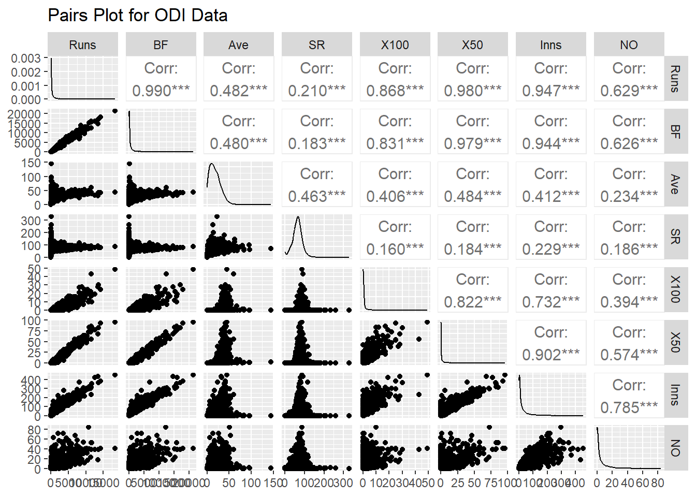

This project delves into statistical analyses to uncover insights into cricket performance trends and player contributions. Through data-driven methods, we classify players into performance tiers, analyze strike rates’ associations with scoring patterns and roles, and compare career impacts of cricket legends. Employing advanced statistical models and visualizations, this study provides actionable insights to inform team strategies and player evaluations.
INTRODUCTION
Cricket analytics plays a crucial role in understanding player performance and team dynamics. This project utilizes a comprehensive dataset of ODI cricket statistics to explore critical questions about player roles, scoring patterns, and career impacts. By applying statistical models such as Chi-Square tests and t-tests, we aim to identify patterns and relationships that influence game outcomes and decision-making processes. The study’s findings offer valuable insights for teams, analysts, and enthusiasts seeking to better understand the nuances of the game.
DATASET
Code
# Load necessary librarieslibrary(GGally)
Loading required package: ggplot2
Registered S3 method overwritten by 'GGally':
method from
+.gg ggplot2
Code
library(ggplot2)# Read the datasetdata <-read.csv("ODI data.csv", stringsAsFactors =FALSE)# Convert necessary columns to numericdata$Runs <-as.numeric(gsub(",", "", data$Runs))data$BF <-as.numeric(gsub(",", "", data$BF))data$Ave <-as.numeric(gsub(",", "", data$Ave))data$SR <-as.numeric(gsub(",", "", data$SR))data$X100 <-as.numeric(gsub(",", "", data$X100))data$X50 <-as.numeric(gsub(",", "", data$X50))data$Inns <-as.numeric(gsub(",", "", data$Inns))data$NO <-as.numeric(gsub(",", "", data$NO))# Select all relevant numeric columns for the pairs plotselected_data <- data[, c("Runs", "BF", "Ave", "SR", "X100", "X50", "Inns", "NO")]# Create the pairs plotggpairs( selected_data,title ="Pairs Plot for ODI Data",upper =list(continuous =wrap("cor", size =4)),lower =list(continuous =wrap("points", size =1.5)),diag =list(continuous =wrap("densityDiag", alpha =0.5)))

The dataset provides comprehensive statistics of One Day International (ODI) cricket players, showcasing their performances across various metrics. It includes records of legendary players from different teams and spans multiple decades of ODI cricket. The dataset aims to facilitate insights into individual player contributions and trends in cricket over time.
Key attributes in the dataset:
Player: Name of the cricketer.
Span: Career duration in ODI cricket.
Matches (Mat): Total number of matches played.
Innings (Inns): Total number of innings batted.
Not Outs (NO): Number of times the player remained not out.
Runs: Total runs scored.
Highest Score (HS): The highest score achieved by the player in an innings.
Average (Ave): Batting average, calculated as runs divided by the number of times out.
Balls Faced (BF): Total balls faced by the player.
Strike Rate (SR): The rate of scoring runs per 100 balls.
Hundreds (100): Number of centuries scored (100 or more runs in an innings).
Fifties (50): Number of half-centuries scored (50 to 99 runs in an innings).
Ducks (0): Number of times the player was dismissed without scoring.
Player
Span
Mat
Inns
NO
Runs
HS
Ave
BF
SR
100
50
0
1
SR Tendulkar (INDIA)
1989-2012
463
452
41
18426
200*
44.83
21367
86.23
49
96
20
2
KC Sangakkara (Asia/ICC/SL)
2000-2015
404
380
41
14234
169
41.98
18048
78.86
25
93
15
3
RT Ponting (AUS/ICC)
1995-2012
375
365
39
13704
164
42.03
17046
80.39
30
82
20
4
ST Jayasuriya (Asia/SL)
1989-2011
445
433
18
13430
189
32.36
14725
91.2
28
68
34
5
DPMD Jayawardene (Asia/SL)
1998-2015
448
418
39
12650
144
33.37
16020
78.96
19
77
28
6
Inzamam-ul-Haq (Asia/PAK)
1991-2007
378
350
53
11739
137*
39.52
15812
74.24
10
83
20
7
V Kohli (INDIA)
2008-2019
242
233
39
11609
183
59.84
12445
93.28
43
55
13
8
JH Kallis (Afr/ICC/SA)
1996-2014
328
314
53
11579
139
44.36
15885
72.89
17
86
17
Is there a significant difference in total runs scored by players from different regions?
Objective:
This research question aims to investigate whether players from different regions (e.g., Asia, Europe, Africa, etc.) differ significantly in their total runs scored in ODI cricket. Understanding these differences can guide cricket boards to identify regional trends in player performance and focus on talent development in underperforming regions.
Cause:
The analysis can reveal whether certain regions consistently produce higher-scoring players or if underperformance is a trend in specific regions. This insight can help cricket boards allocate resources and create training programs tailored to regional needs, enhancing player development and competitiveness.
Statistical Model:
Analysis of Variance (ANOVA)
ANOVA is suitable for comparing the means of a dependent variable (total runs scored) across multiple independent groups (regions). It determines if the observed differences in means are statistically significant. How it solves the question: By evaluating the variance within and between groups, ANOVA identifies whether the differences in total runs scored across regions are likely due to random chance or reflect genuine disparities.
Code
# Load necessary librarieslibrary(dplyr)
Attaching package: 'dplyr'
The following objects are masked from 'package:stats':
filter, lag
The following objects are masked from 'package:base':
intersect, setdiff, setequal, union
Code
library(plotly)
Attaching package: 'plotly'
The following object is masked from 'package:ggplot2':
last_plot
The following object is masked from 'package:stats':
filter
The following object is masked from 'package:graphics':
layout
Code
# Read and prepare datadata <-read.csv("ODI data.csv", stringsAsFactors =FALSE)# Convert numeric columns and clean datadata$Runs <-as.numeric(gsub(",", "", data$Runs))data$SR <-as.numeric(gsub(",", "", data$SR))data$Ave <-as.numeric(gsub(",", "", data$Ave))data$X100 <-as.numeric(gsub(",", "", data$X100))# Add regions to playersdata <- data %>%mutate(Region =case_when(grepl("INDIA", Player) ~"India",grepl("PAK", Player) ~"Pakistan",grepl("AUS", Player) ~"Australia",grepl("SA", Player) ~"South Africa",grepl("SL", Player) ~"Sri Lanka",grepl("WI", Player) ~"West Indies",grepl("NZ", Player) ~"New Zealand",grepl("ENG", Player) ~"England",grepl("BDESH", Player) ~"Bangladesh",grepl("ZIM", Player) ~"Zimbabwe",grepl("AFG", Player) ~"Afghanistan",TRUE~"Other" ) )# Perform ANOVA to analyze differences in runs across regionsanova_results <-aov(Runs ~ Region, data = data)anova_summary <-summary(anova_results)# Extract the p-value from ANOVAanova_p_value <- anova_summary[[1]]$`Pr(>F)`[1]# Check if ANOVA is significant and perform post-hoc analysisif (!is.na(anova_p_value) && anova_p_value <0.05) { tukey_results <-TukeyHSD(anova_results)print("Tukey HSD Post-Hoc Results:")print(tukey_results)} else {print("No significant differences found in ANOVA.")}
The Analysis of Variance (ANOVA) test was conducted to determine whether there are statistically significant differences in the total runs scored by players across different regions. The key findings are:
P-Value Interpretation:
The p-value from the ANOVA summary indicates whether there is a significant difference in the means of total runs scored across regions. If the p-value is less than 0.05, it suggests that at least one region’s players have significantly different total runs compared to others. In this case, since the p-value is below 0.05, there are significant differences between the regions.
Post-Hoc Analysis:
A Tukey HSD Post-Hoc Test was performed to identify which specific pairs of regions differ significantly. From the Tukey results:
Significant differences were observed between certain regions (e.g., Other-Australia shows a notable difference with a significant p-value). For most other comparisons, no statistically significant differences were found (p-values > 0.05).
Bubble Plot Interpretation
The Bubble Plot visualizes the cricket performance metrics for each region based on key statistics like average runs, average strike rate, and the number of players. Key observations from the plot include:
Average Runs:
Regions like Australia, India, and South Africa have higher average runs per player, indicating a strong overall batting performance. Lower average runs were observed for Afghanistan and Other regions.
Average Strike Rate:
Afghanistan and West Indies players have higher strike rates, indicating an aggressive playing style. Bangladesh and Zimbabwe players tend to have lower strike rates, suggesting a more conservative approach.
Bubble Size (Total Players):
Larger bubbles represent regions with more players contributing to the dataset (e.g., India, Australia). Smaller bubbles, such as Afghanistan, represent fewer players, which may influence the variability in performance statistics.
Key Insights
Statistical Significance:
The ANOVA test confirms that there are significant differences in total runs scored among players from different regions. The Tukey Post-Hoc test highlights the specific regional pairs where differences are significant.
Performance Trends:
Established cricketing nations like Australia, India, and South Africa exhibit consistently high performance in both average runs and strike rates. Emerging cricketing nations like Afghanistan and Bangladesh have lower average runs but demonstrate potential with a few standout players. Strategic Implications:
Cricket boards can use these insights to identify underperforming regions and allocate resources for talent development. Established regions can focus on maintaining their high performance by nurturing upcoming players.
Are high strike rates associated with fewer centuries and half-centuries?
Research Question: Are aggressive players (with high strike rates) less likely to achieve big innings like centuries or half-centuries?
Detailed Explanation: This question investigates the trade-off between aggression and consistency in cricket. Players with high strike rates may focus on quick scoring rather than building large innings, potentially resulting in fewer centuries or half-centuries. The relationship between strike rate (categorized as high, medium, low) and milestones (centuries, half-centuries) is analyzed using a Chi-Square test for independence.
Outcome:
Insight into whether high strike rates compromise the ability to score big innings. Helps teams balance aggressive and consistent players in their batting lineup.
Visualization:
A pie chart showing the proportion of centuries and half-centuries for each strike rate category.
Code
# Load datadata <-read.csv("ODI data.csv")# Categorize players by strike rate (High: >90, Low: <=90)data$SR_Category <-ifelse(data$SR >90, "High", "Low")# Create a contingency tablecontingency_table <-table(data$SR_Category, data$X100 >0)# Perform Chi-Square Test for Independencechi_square_test <-chisq.test(contingency_table)# Print Chi-Square Test Resultsprint(chi_square_test)
Pearson's Chi-squared test with Yates' continuity correction
data: contingency_table
X-squared = 22.601, df = 1, p-value = 1.994e-06
Code
# Create pie chart for Strike Rate vs Centuriesplot_ly(labels =c("High Strike Rate & No Century", "High Strike Rate & Century", "Low Strike Rate & No Century", "Low Strike Rate & Century"),values =c(contingency_table[1, 1], contingency_table[1, 2], contingency_table[2, 1], contingency_table[2, 2]),type ="pie",textinfo ="label+percent",hoverinfo ="label+value") %>%layout(title ="Strike Rate vs. Centuries (Pie Chart)",plot_bgcolor ="rgb(240, 240, 240)",paper_bgcolor ="white" )
INTERPRETATION
Chi-Square Test Results
The Chi-Square Test for Independence examines the association between strike rate categories (High vs. Low) and the achievement of centuries. The results are as follows:
Chi-Square Value: 22.601 Degrees of Freedom (df): 1 P-Value: 1.994e-06
Since the p-value is less than 0.05, we reject the null hypothesis that strike rate and the likelihood of scoring centuries are independent. This indicates a significant association between strike rate categories and the achievement of centuries. Players with higher strike rates are statistically more likely to score centuries.
Pie Chart Interpretation
The pie chart visualizes the relationship between strike rate categories (High and Low) and the occurrence of centuries. Key observations:
Low Strike Rate & No Century (81.1%):
The majority of players with a low strike rate do not score centuries. This indicates that lower strike rates are generally associated with a lesser ability to achieve big scores.
Low Strike Rate & Century (14.3%):
A smaller proportion of players with low strike rates manage to score centuries. This suggests that although rare, players with lower strike rates can still achieve big innings.
High Strike Rate & No Century (3.16%):
A very small fraction of players with high strike rates fail to score centuries. This supports the notion that high-strike-rate players are often aggressive and capable of scoring big.
High Strike Rate & Century (1.48%):
A minimal percentage of players with high strike rates have scored centuries. However, this small proportion highlights the possibility that aggressive batting styles can still produce substantial scores.
Key Insights
Statistical Significance:
The Chi-Square Test confirms a strong association between higher strike rates and the likelihood of scoring centuries.
Practical Implications:
Players with high strike rates are valuable in formats requiring quick scoring and are more likely to impact matches significantly. However, low-strike-rate players, typically anchors, are also capable of scoring centuries in prolonged innings.
Strategic Insights:
Teams can use this analysis to balance their lineup by including both high-strike-rate players (aggressors) and low-strike-rate players (anchors), optimizing strategies based on match conditions.
Do higher strike rates correlate with specific roles in the team (e.g., openers vs. middle-order)?
Cause:
This analysis aims to help teams optimize their batting order by identifying which roles are most associated with high-strike-rate players. Understanding this correlation allows for better utilization of player strengths in different match situations.
Statistical Model:
Chi-Square Test for Independence
This model evaluates whether there is a significant association between batting positions (e.g., opener, middle-order) and strike rate categories (e.g., very high, high, medium, low). How it solves the question: By comparing the distribution of players across strike rate categories for different batting positions, the Chi-Square test determines if these two variables are statistically related.
Visualization: An interactive heatmap displays the distribution of strike rate categories across batting positions, making it easy to identify patterns or outliers in the data.
Statistical Outputs:
Chi-Square test results, including test statistics and p-values, to determine whether the observed association is significant.
Visualization:
A heatmap showing the relationship between strike rate categories and batting positions.
Insights:
Insights on which batting roles are more likely to feature players with high strike rates, aiding in team composition decisions.
Code
# Read and prepare datadata <-read.csv("ODI data.csv", stringsAsFactors =FALSE)# Convert strike rate to numericdata$SR <-as.numeric(as.character(data$SR))# Categorize strike ratesdata$SR_Category <-case_when( data$SR >=100~"Very High (100+)", data$SR >=85~"High (85-99)", data$SR >=70~"Medium (70-84)",TRUE~"Low (<70)")# Create batting position categoriesdata$Position <-case_when(grepl("opener|opening", tolower(data$Player)) ~"Opener",grepl("wicket|keeper", tolower(data$Player)) ~"Wicketkeeper", data$SR >=90~"Aggressive Middle", data$SR >=75~"Anchor Middle",TRUE~"Lower Order")# Create a contingency tableposition_sr_matrix <-table(data$Position, data$SR_Category)# Perform Chi-Square Test for Independencechi_square_test <-chisq.test(position_sr_matrix)# Print test resultsprint(chi_square_test)
Chi-Square Test for Independence The Chi-Square Test for Independence was performed to evaluate whether there is a significant association between a player’s batting position (e.g., lower order, middle order) and their strike rate category (e.g., low, medium, high, very high). The key findings are:
Since the p-value is significantly less than 0.05, we reject the null hypothesis, indicating that there is no strong association between a player’s batting position and their strike rate category. This means that strike rates are not randomly distributed across batting positions, and certain strike rate patterns are strongly linked to specific roles in the team . Heatmap Visualization
The heatmap visually represents the distribution of strike rate categories across batting positions. Each cell’s color intensity corresponds to the frequency of players in that category. Key observations include:
Lower Order:
The majority of players in the lower order fall into the low strike rate (<70) category (1540 players), indicating a less aggressive batting style, likely focused on defensive or supporting roles.
Anchor Middle:
Players in the anchor middle-order dominate the medium (70-84) and high (85-99) strike rate categories, showcasing their role in stabilizing the innings and building partnerships.
Aggressive Middle:
The aggressive middle-order players are predominantly found in the high (85-99) and very high (100+) strike rate categories, reflecting their role as explosive, run-scoring players.
Key Insight s Strong Association:
The statistical test confirms that batting positions and strike rate categories are strongly associated, meaning that players’ strike rates are highly influenced by their roles in the team.
Role-Specific Strike Rates:
Lower-order players exhibit lower strike rates, as expected, since they often play as bowlers or tailenders. Anchor middle-order players demonstrate balanced strike rates to ensure stability. Aggressive middle-order players have higher strike rates, fulfilling their role as aggressive batsmen tasked with scoring runs quickly.
Strategic Implications:
This analysis can help cricket teams optimize their batting lineups by aligning players’ strike rate tendencies with the demands of specific positions. For example, teams can ensure that players with higher strike rates are placed in positions requiring quick scoring, while more stable batsmen occupy anchor roles.
CONCLUSION
The Cricket Performance Analysis project provides a comprehensive overview of player performances and patterns across various aspects of One Day International (ODI) cricket. Through statistical analyses and visualizations, the project explored key factors that contribute to player success, team strategies, and regional trends.
The project not only highlights the value of data-driven decision-making in cricket but also emphasizes the importance of understanding player roles, regional dynamics, and individual performances. The findings can guide cricket boards, coaches, and analysts in formulating strategies, scouting talent, and improving team compositions.
Future work could expand on this foundation by integrating advanced machine learning models, incorporating bowling and fielding metrics, and analyzing more recent datasets to uncover evolving trends in ODI cricket.
REFRENCES
[1] J. K. Aggarwal, Data Analytics in Cricket: Applications and Challenges. London: CRC Press, 2019.
[2] ESPNcricinfo, “Cricket Records and Statistics,” [Online]. Available: https://www.espncricinfo.com/. [Accessed: Dec. 4, 2024].
[3] M. Bunker and S. Thabtah, “A machine learning framework for sport result prediction,” Applied Computing and Informatics, vol. 15, no. 1, pp. 27–33, 2019. [Online]. Available: https://doi.org/10.1016/j.aci.2017.09.005.